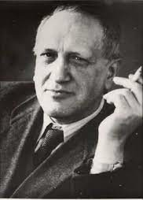
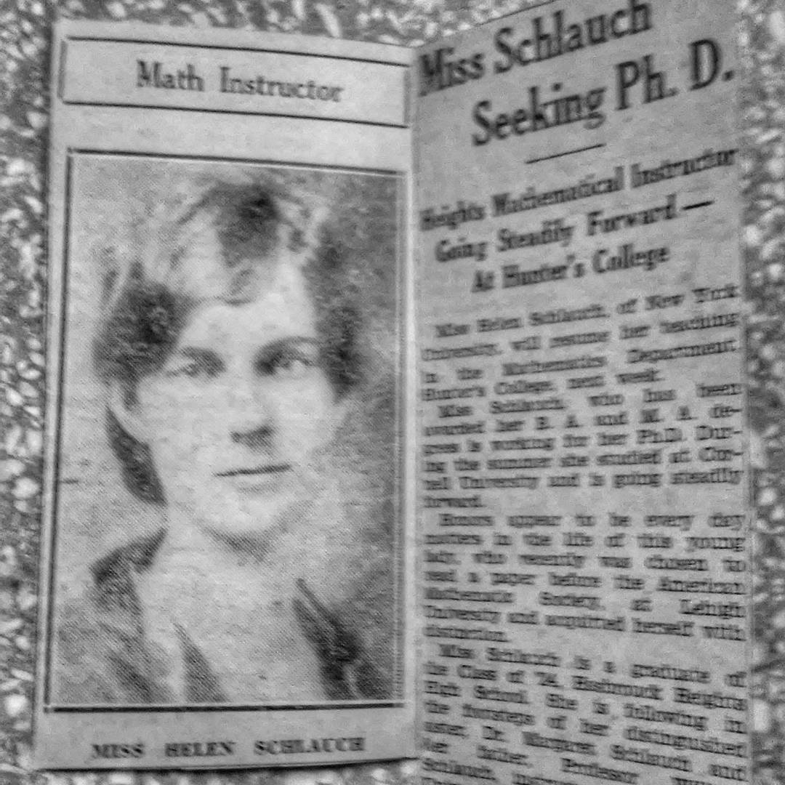
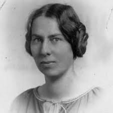
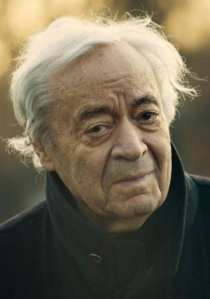
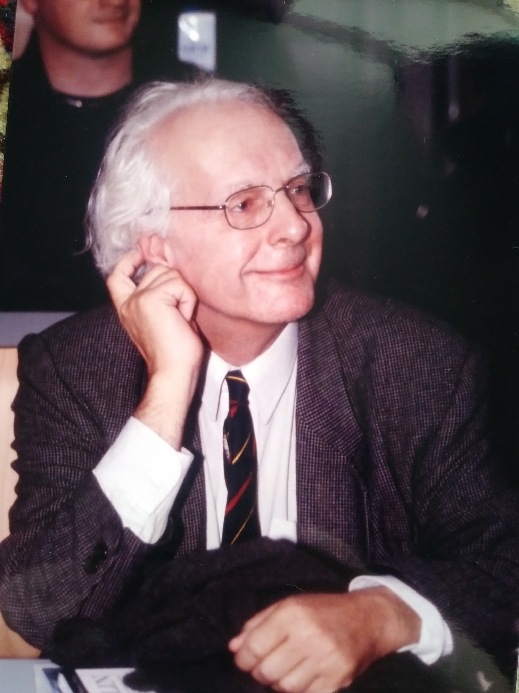
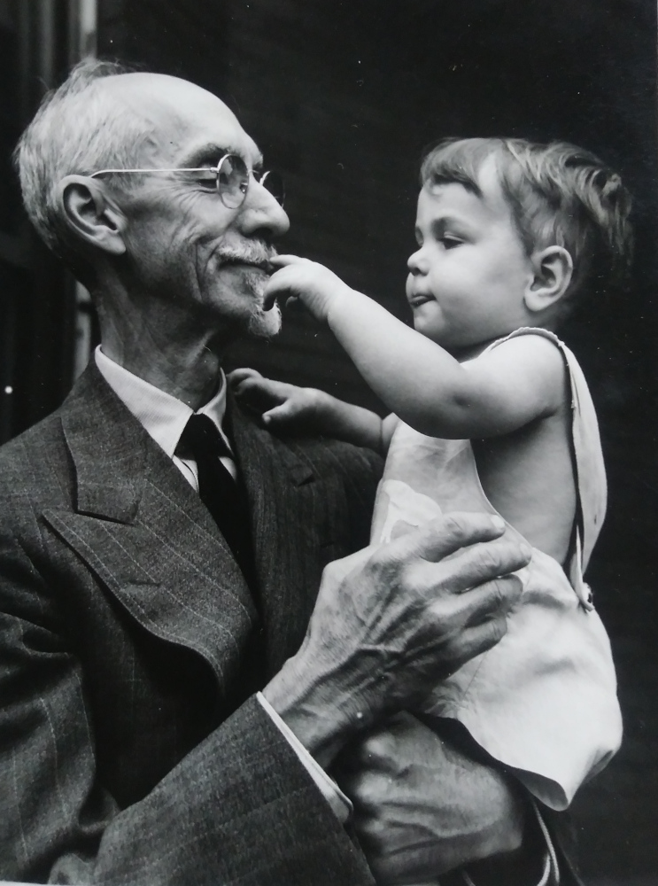
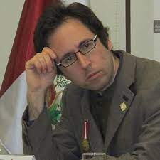

THE ACADEMIC LEGACY OF MY FAMILY
 My grandfather Leopold Infeld was one of the foremost physicists of the XXth century. He is remembered primarily as a co-author and friend of Albert Einstein's. He was also the architect of the Polish school of theoretical physics after WW2, educator and peace activist. He was one of the signatories of the Russel-Einstein Manifesto, which still resonates today. Of the eleven signatories, he was the only one to never receive the Nobel Prize. Campaigning for nuclear disarmament resulted in his family, including my 10 year old father, being made stateless by Canada in 1950. Here is the full text of The Evolution of Physics by A. Einstein and L. Infeld.
 My grandmother Helen Mary Schlauch (later Infeld) recieved a PhD in Mathematics at Cornell in 1933, at a time when few women pursued mathematics. There is a chapter dedicated to her in the book Pioneering Women of American Mathematics by Judy Green and Jeanne Laduke. Among the many old documents at home I found poetry she wrote in college. I really wish I had memories of her beyond a six year old's image of an old lady. Pretty sure we'd get along.
 Helen's sister Margaret Schlauch was a pioneering linguist who specialized in English and Old Norse literature. Her writings are still read by linguists today. She was the head of the English department at the University of Warsaw until retirement, and was awarded the Icelandic Order of the Falcon, the highest honour bestowed on individuals by the Icelandic state. It was pretty clear that she didn't have a good relationship with my dad, and he almost never talked about her. I wish it had been different. She sounds like a warrior.
 My other grandfather is the Polish writer Józef Hen. He is known both for memoirs of his time before and during WWII, contemporary diaries, biographies of great progressive thinkers as well as dozens of works of fiction and screenplays. One of the distinguishing features of his prose is a keen insight into human nature and a boldness in tackling humanity's darkest demons. Oh yes, and he's a wise and loving grandpa. November 8th 2023 marks his 100th birthday and (knock on wood) he is in remarkably good health.
 My father Eric Infeld was a professor of physics at the University of Warsaw. He worked in the field of plasma physics, and suprised everyone by being a great dad. I am grateful to his institute for this beautiful memory. His best known book is Non-linear Waves, Solitons and Chaos.
 Mary Helen's and Margaret's father William Straub Schlauch, my great-grandfather, was a professor of mathematics in New York and author of early books on financial mathematics, such as "Commercial Algebra" and "General Mathematics for the students of Business."
 In a surprising twist, on the maternal side of the family that is more associated with humanities is my third cousin Harald Helfgott, a mathematician who proved a long-standing conjecture in number theory.
I could keep going. I feel uneasy about all of this and it ties in to the fact that my generation grew up being promised a bright future, and now we don't have that future in any way that is meaningful. I am trying to unlearn the pursuit of legacy, because I have a great present instead. I want to learn to cherish it. It's pretty clear by now I won't add to this legacy all that much. But I don't think it would make a difference if I did. I am trying to be proud of them, rather than let it make me feel inadequate. A pursuit of academic legacy never got me anywhere (except a few degrees that may or may not have been worth it), but a pursuit of love, adventures, rebellion, bonds and brainstorming has always born great fruit. Life can be magical. I just need to learn to stop feeling guilty about getting lost in the magic.